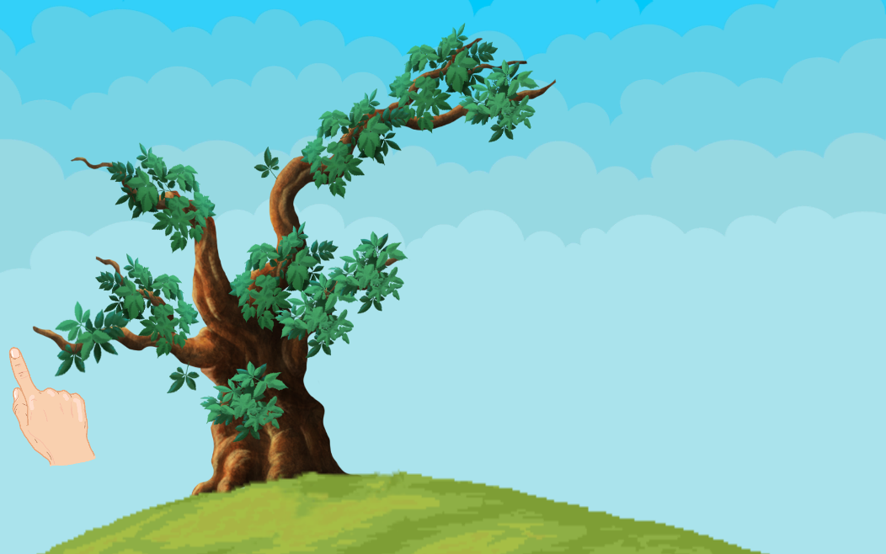

Activiteit 2: Hackaton Sint-Oda
Om de innovatieroute succesvol af te ronden moesten we nog deelnemen aan een hackaton. Oorspronkelijk dacht ik dat hackatons wedstrijden waren waarbij je met een team in een systeem moest hacken. Dit bleek, na het zien van de mogelijke hackatons, niet het geval. Ik heb gekozen voor de hackaton van Sint-Oda omdat ik vooral iets wou doen waarmee ik wist dat ik iets kon bijdragen. Het was toen ook een vrij stressvolle periode en meedoen aan een wedstrijd zoals die van de Google Hash Code was op dat moment echt niets voor mij. Verder vond ik deze hackaton ook een mooi initiatief omdat op de markt er zeer weinig games zijn die geschikt zijn voor mensen met een meervoudige beperking, wat in mijn ogen zeer jammer is. Het doel van deze hackaton was ook om een zeer eenvoudige, maar toch interessante game te maken voor dit doelpubliek.
De hackaton werd georganiseerd door de therapeuten en studenten ergotherapie. Deelnemen deden we in een multidisciplinair team van AON-studenten en SWM-studenten. Ter voorbereiding van de hackaton heb ik online wat opgezocht over Sint-Oda en waar ze juist voor staan. Voor de rest had ik me niet voorbereid omdat er nog geen duidelijke opdracht was. De dag van de hackaton werd de opdracht voorgesteld: het maken van een seizoengame. Bij de wintergame moest je met sneeuwballen gooien, in de lentegame moest je tikken op eieren om zo het kuiken eruit te laten komen, de zomergame draaide rond vissen en in de herfstgame moest je op bladeren tikken om deze te laten vallen en achteraf met een bladblazer op te ruimen. Als team kozen we voor de herfstgame omdat deze ons het leukst en het meest haalbare leek in anderhalve dag.
.png)
Vanuit de opdrachtgever werd voorgesteld om de game in Unity te maken. Niemand van ons team had hier ervaring in, maar toch besloten we dit framework te gebruiken in de hoop dat we snel de nodige dingen zouden leren om deze game tot een goed einde te brengen. Een initiële teamverdeling was er niet, iedereen begon met het installeren van Unity en vervolgens een simpel 2D-project op te zetten. Eens dat dit project was opgezet, werd dit gepusht naar een Github-repository en vanaf toen kon iedereen beginnen werken aan het project. In het begin heb ik geholpen met zoeken naar het design van de applicatie. Via de Unity asset store vonden we bestaande modellen van gras, bomen en bladeren. Hierdoor hadden we gemakkelijk al de setup van de game kunnen maken. Vervolgens moest de game ook nog functioneel werken. Ik nam, samen met nog andere teamleden, de taak op om uit te zoeken hoe het klikken op een blad en deze laten vallen werkt. Dit verliep redelijk moeizaam en heeft dan ook het langst geduurd in heel het proces. Uiteindelijk met het juiste script ,de juiste informatie en de kennis die we hebben opgedaan tijdens de lessen van .NET Essentials en Advanced is het ons toch gelukt. Op dit moment was dag één voorbij en moest de game nog wat aantrekkelijker worden. Ik heb mij die avond nog wat extra ingezet om de game te kunnen herstarten en de achtergrondmuziek en animatiemuziekjes in te stellen. De volgende dag werkten we nog af wat we konden en zorgden we dat alles ook werkte zonder bugs. Het eindresultaat was een game met een timer, de mogelijkheid om de bladeren in tijd te laten vallen en de game te herstarten. De feature van de bladblazer en verschillende niveaus hebben we jammer genoeg niet op tijd kunnen implementeren, maar dat betekent niet dat we niet tevreden waren met het eindresultaat.
Tijdens het proces zijn er ook enkele problemen opgedoken zoals al eerder vermeld met het toevoegen van bladeren, maar ook de beperkte tijd heeft voor een groot probleem gezorgd. We hadden al snel door dat we niet heel de game af gingen krijgen en hebben hierdoor besloten om het project wat af te bakenen en alles goed uit te werken wat kon. Voor hulp en advies konden we ook altijd terecht bij de leerkrachten die aanwezig waren, maar ook bij de therapeuten en studenten ergotherapie die ons altijd in de juiste richting stuurden. Verder merkte ik dat mijn sterktes lagen in het bijhouden van een overzicht over wat er gemaakt werd en wat er nog gedaan moest worden. Dit konden we dan gebruiken om het project af te bakenen tot een realistisch product. Mijn zwaktes lagen dan eerder in het exporteren van de game.
Achteraf ben ik zeer blij met de keuze voor Sint-Oda omdat we niet alleen tot een mooi eindresultaat zijn gekomen en dat de bewoners ook konden genieten van de game, maar ook omdat het twee zeer toffe dagen waren en ik het Unity-framework heb leren kennen. De ervaring heeft mij heel alert gemaakt dat de markt voor deze doelgroep veel te klein is. Dit is zijn ook de grootste reden dat ik heb besloten om dit op te nemen in dit deel van het portfolio. Omdat de ervaring met Unity meer interesse heeft opgewekt, zou het goed kunnen dat ik in de toekomst me wel wil inzetten om meer games te maken die gebruiksvriendelijk zijn voor deze doelgroep.